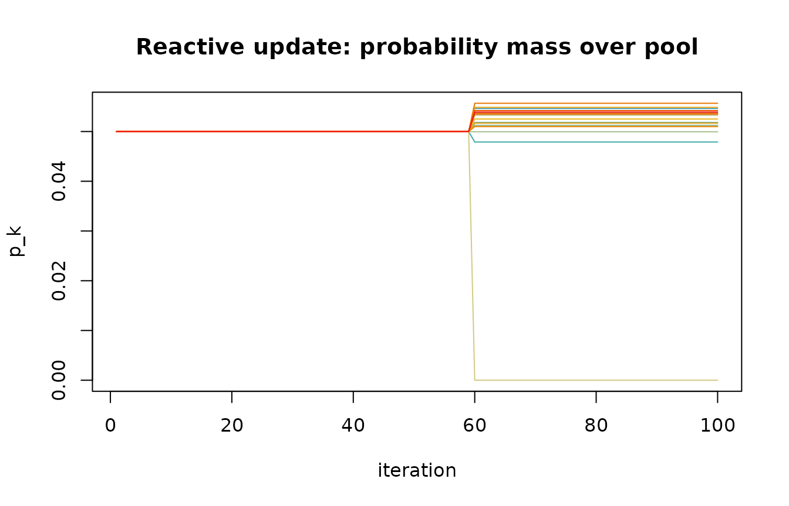
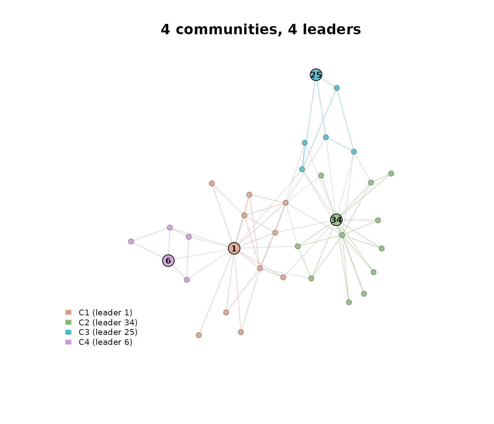

Overview
lcdaGRASP implements the four algorithms of Ospina,
Silva, Matos Junior, Leite and Ochi (2026) for joint
community-and-leader detection:
-
lcda_grasp()— fixed-parameter GRASP, variants 1 (static centrality) and 2 (adaptive centrality recomputed each iteration). -
lcda_gr()— Reactive GRASP, variants 1 and 2, with a bivariate self-tuning mechanism over a pool of(alpha_c, alpha_s)pairs.
The performance-critical kernels (incremental modularity, community
affinities, similarity vectors, the VNMI multi-improvement extension,
and power-iteration eigenvector centrality) are implemented in C++ via
Rcpp. The package follows a tidyverse style: snake_case throughout,
tibble outputs where tabular, cli for logging,
and a verbose flag on every substantive function.
Quick start
library(lcdaGRASP)
#> lcdaGRASP 0.3.2 - GRASP / Reactive-GRASP for joint community-leader detection.
#> Reference: Ospina et al. (2026), preprint. See `vignette('lcdaGRASP-intro')`.
library(igraph)
#>
#> Attaching package: 'igraph'
#> The following objects are masked from 'package:stats':
#>
#> decompose, spectrum
#> The following object is masked from 'package:base':
#>
#> union
g <- make_graph("Zachary") # 34-node karate club
res <- lcda_grasp(g,
alpha_c = 0.1, alpha_s = 0.3, B = 30,
centrality = "eigen", similarity = "hpi",
seed = 1)
print(res)
#>
#> ── LCDA-GRASP result ───────────────────────────────────────────────────────────
#> variant: 1
#> B: 30
#> centrality / similarity: eigen / hpi
#> best Q: 0.402038
#> best H: 0.84
#> best iteration: 4
#> communities: 3
#> elapsed (s): 0.204
#> ℹ `lcda_metrics()` for the full metric table; `plot()` for the community-leader map.Set verbose = TRUE for a cli progress bar
and a one-line summary:
invisible(lcda_grasp(g, B = 10, seed = 1, verbose = TRUE))
#> ✔ best Q = 0.402038 (H = 0.84) at iteration 4, 3 communitiesSwitching to the Reactive variant
res_r <- lcda_gr(g, variant = 1, B = 100, seed = 1)
print(res_r)
#>
#> ── LCDA-GR (Reactive) result ───────────────────────────────────────────────────
#> variant: 1
#> B / m / y: 100 / 20 / 60
#> best Q: 0.41979
#> best H: 0.7377
#> best iter / pair: 5 / 17
#> H-decisive updates: 0 (0.0% of B)
#> elapsed (s): 0.939
#> ℹ `lcda_metrics()` for the full metric table; `plot()` for the community-leader map.
plot_reactive_pk(res_r)
The print method reports the fraction of iterations in which the
lexicographic tie-break on H (Node-Connection Entropy) was
decisive — iterations where Q was tied with the running
best and H made the difference. In typical networks this
fraction is small; see the Reactive convergence and Pool
sensitivity articles.
Statistical comparison
The paper uses a Kruskal–Wallis omnibus test followed by pairwise
permutation tests with Bonferroni correction.
kruskal_then_permute() returns a tibble of pairwise
contrasts and a compact-letter display:
set.seed(1)
df <- data.frame(
Q = c(rnorm(20, 0.40, 0.01), rnorm(20, 0.42, 0.01), rnorm(20, 0.42, 0.01)),
cfg = rep(c("a", "b", "c"), each = 20)
)
out <- kruskal_then_permute(df$Q, df$cfg, B_perm = 2000)
out$letters
#> a b c
#> "a" "b" "b"From a result to the paper’s numbers
lcda_metrics() turns a fitted result into the quantities
the paper’s tables report. The default level is a tidy long table
grouped by scope: the partition (Q, community count, size
distribution), the leaders (the NCE score in both forms, leader degrees,
coverage), the search (runtime, the best iteration, trace dispersion,
and how often the lexicographic tie-break on H was actually
decisive), and — when a ground truth is supplied — recovery.
m <- lcda_metrics(res_r)
subset(m, scope %in% c("partition", "search"))
#> # A tibble: 21 × 4
#> algorithm scope metric value
#> <chr> <chr> <chr> <dbl>
#> 1 LCDA-GR partition n_nodes 34
#> 2 LCDA-GR partition n_edges 78
#> 3 LCDA-GR partition total_edge_weight 78
#> 4 LCDA-GR partition n_communities 4
#> 5 LCDA-GR partition Q 0.420
#> 6 LCDA-GR partition size_min 5
#> 7 LCDA-GR partition size_median 8.5
#> 8 LCDA-GR partition size_mean 8.5
#> 9 LCDA-GR partition size_max 12
#> 10 LCDA-GR partition size_sd 3.51
#> # ℹ 11 more rowsPass truth = for the recovery indices (NMI, ARI, Rand,
VI, split-join). The Zachary club’s documented split is the natural
reference here:
truth <- c(rep(1, 17), rep(2, 17))
subset(lcda_metrics(res_r, truth = truth), scope == "recovery")
#> # A tibble: 6 × 4
#> algorithm scope metric value
#> <chr> <chr> <chr> <dbl>
#> 1 LCDA-GR recovery nmi 0.277
#> 2 LCDA-GR recovery ari 0.139
#> 3 LCDA-GR recovery rand 0.576
#> 4 LCDA-GR recovery vi 1.46
#> 5 LCDA-GR recovery split_join 25
#> 6 LCDA-GR recovery n_communities_truth 2Baselines that carry no leaders are accepted and scored through
exactly the same code path, with their leaders derived as the
top-eigenvector node of each community and flagged as such, so a
comparison table is one rbind() away:
subset(lcda_metrics(cluster_louvain(g), g, truth = truth), scope == "recovery")
#> # A tibble: 6 × 4
#> algorithm scope metric value
#> <chr> <chr> <chr> <dbl>
#> 1 multi level recovery nmi 0.277
#> 2 multi level recovery ari 0.139
#> 3 multi level recovery rand 0.576
#> 4 multi level recovery vi 1.46
#> 5 multi level recovery split_join 25
#> 6 multi level recovery n_communities_truth 2The per-community and per-leader breakdowns answer the questions the
summary row cannot. Each community’s q_contribution sums
exactly to Q, and each leader’s degree_pctile_in_community
is the statistic the paper’s external leader validation uses.
lcda_metrics(res_r, level = "community")
#> # A tibble: 4 × 11
#> algorithm community size leader leader_name leader_degree internal_edges
#> <chr> <int> <int> <int> <chr> <dbl> <dbl>
#> 1 LCDA-GR 1 11 1 1 16 23
#> 2 LCDA-GR 2 12 34 34 17 21
#> 3 LCDA-GR 3 6 25 25 3 7
#> 4 LCDA-GR 4 5 6 6 4 6
#> # ℹ 4 more variables: boundary_edges <dbl>, internal_density <dbl>,
#> # conductance <dbl>, q_contribution <dbl>
lcda_metrics(res_r, level = "leader")
#> # A tibble: 4 × 14
#> algorithm community leader leader_name community_size degree degree_within
#> <chr> <int> <int> <chr> <int> <dbl> <dbl>
#> 1 LCDA-GR 1 1 1 11 16 10
#> 2 LCDA-GR 2 34 34 12 17 11
#> 3 LCDA-GR 3 25 25 6 3 3
#> 4 LCDA-GR 4 6 6 5 4 3
#> # ℹ 7 more variables: degree_between <dbl>, eigen_centrality <dbl>,
#> # nce_node <dbl>, participation <dbl>, degree_rank_in_community <int>,
#> # degree_pctile_in_community <dbl>, source <chr>The community-and-leader map
plot() on a fitted result draws the partition with the
elected leaders highlighted; the result carries the graph it was fitted
on, so nothing else is needed. lcda_plot_communities() does
the whole pipeline (detect communities, designate leaders, draw) from a
bare graph in one call, and ggplot2::autoplot() returns the
same figure as a ggplot object.

Community-conditioned NCE
The paper’s NCE uses the global connection probability
k_v / n. The package also exposes a community-conditioned
alternative nce_local_score() measuring within-community
connectivity entropy; the two can differ materially (see the Leader
score article).
H_global <- nce_score(g, res_r$best$leaders)
H_local <- nce_local_score(g, res_r$best$membership, res_r$best$leaders)
cat("H (global, paper):", round(H_global, 4),
" | H (community-conditioned):", round(H_local, 4), "\n")
#> H (global, paper): 0.7377 | H (community-conditioned): 0.4456Precomputed simulation datasets
The companion Articles render from precomputed results
shipped under inst/extdata/, so they never re-run a
simulation. List them with:
lcda_data()
#> # A tibble: 28 × 1
#> dataset
#> <chr>
#> 1 blogs_table9
#> 2 blogs_timing
#> 3 consensus_leader_test
#> 4 degeneracy
#> 5 doe_lfr_recovery
#> 6 doe_rsm
#> 7 doe_screening
#> 8 eda_replicates
#> 9 gnn_baseline
#> 10 largescale
#> # ℹ 18 more rowsReferences
- Ospina, R., Silva, G., Matos Junior, F. J., Leite, A., & Ochi, L. S. (2026). A GRASP Framework for Community and Leader Detection in Complex Networks. Preprint submitted to Knowledge-Based Systems.
- Feo, T. A., & Resende, M. G. C. (1995). Greedy Randomized Adaptive Search Procedures. Journal of Global Optimization, 6(2), 109–133. doi:10.1007/BF01096763
- Prais, M., & Ribeiro, C. C. (2000). Reactive GRASP. INFORMS Journal on Computing, 12(3), 164–176. doi:10.1287/ijoc.12.3.164.12639